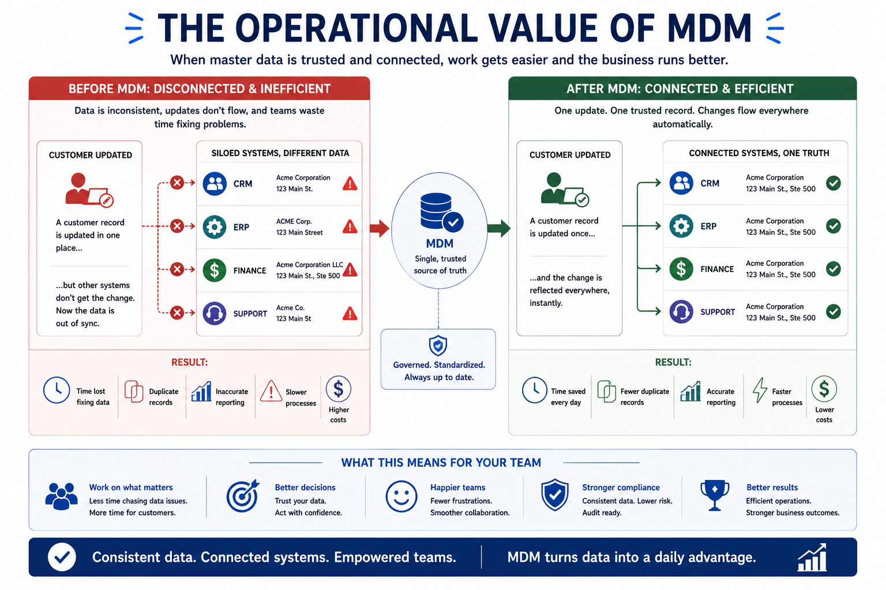
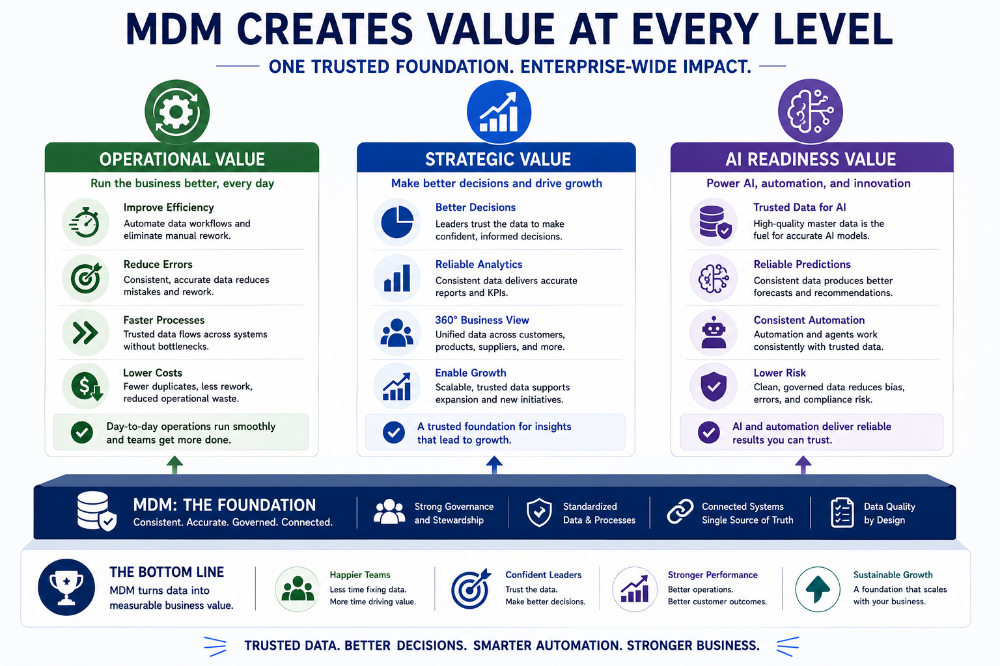

Master Data Management and Business Outcomes
Module support notes
Master Data Management is not only about organizing data. Organizations invest in MDM because better data leads to better business outcomes. When business information becomes trusted, teams work faster, reporting becomes more reliable, and decision-making improves — and AI systems finally have the foundation they need to perform.
The big picture
MDM creates value at three levels: operationally by reducing friction and improving efficiency, strategically by strengthening decisions and supporting growth, and in the age of AI by providing the trusted data foundation that intelligent systems depend on.
Operational value
At an operational level, MDM helps organizations work more efficiently. When teams rely on the same business information, they spend less time correcting errors, searching for records, or reconciling conflicting reports. A customer update made once is reflected consistently across systems. Product information is reused instead of recreated. This reduces duplication, lowers overhead, and frees teams to focus on higher-value work.

Strategic value
Beyond daily operations, MDM creates strategic value. Leadership teams depend on accurate information to plan, forecast, and make business decisions. When reports are built from inconsistent records, decisions become less reliable. MDM establishes a trusted foundation for analytics, planning, and enterprise initiatives — and as organizations grow, that consistency becomes increasingly important for scaling successfully.
MDM as the foundation for AI
Data quality has become even more critical because of AI. AI systems depend on structured, consistent business information. When customer, product, or supplier records are duplicated or inconsistent, AI models receive conflicting context — leading to unreliable predictions, inconsistent automation, and reduced trust in results. MDM creates the conditions AI needs to perform effectively. Strong AI outcomes begin with strong data foundations.

Closing thought
Organizations that manage their business information effectively position themselves to move faster, adapt more easily, and create more value from their data. This page completes Module 1 and establishes the foundation for everything that follows.